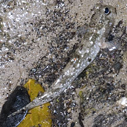
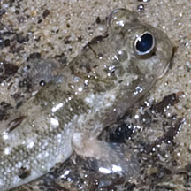

|
|
| fishes text index | photo index |
| Phylum Chordata > Subphylum Vertebrate > fishes > Family Gobiidae > mudskippers |
| Pearse's
mudskipper Periophthalmus novemradiatus* Family Gobiidae updated Oct 2016 Where seen? A small, well camouflaged mudskipper that is commonly seen near mangroves and other silty shores. Sometimes also seen on seawalls and rocky shores. Features: 4-6cm. A small mudskipper with iridiscent bluish speckles on its head and body. Its pectoral and tail fins are reddish near the body with transparent edges. The fish is only positively identified by looking at their underside, to see the blackish area near the gills. More about how to tell apart small mudskippers commonly found on our shores. |
 Berlayar Creek, Nov 07  Pectoral fins reddish near the body. |
*Species are difficult to positively identify without close examination.
On this website, they are grouped by external features for convenience of display.
| Pearse's mudskippers on Singapore shores |
| Photos of Pearse's mudskippers for free download from wildsingapore flickr |
| Distribution in Singapore on this wildsingapore flickr map |
Links
References
|
|
|